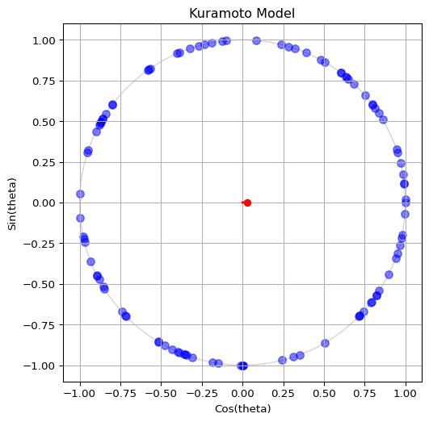

Kuramoto Model
Coupled Oscillators
The Kuramoto model describes a population of weakly coupled oscillators. Each oscillator has a phase \(\theta_i\) and a natural frequency \(\omega_i\).
The natural frequency of each oscillator (\(\omega_i\)) is drawn from a normal distribution centered at zero, and with standard deviation (scale parameter) \(\sigma\). The density function of this normal distribution is:
\[ g(\omega) = \frac{1}{\sqrt{2\pi}\sigma} \exp\left(-\frac{\omega^2}{2\sigma^2}\right). \]
The initial phase of each oscillator (\(\theta_i\)) is drawn from an uniform distribution between \(0\) and \(2\pi\).
For any system of weakly coupled, nearly identical limit-cycle oscillators, the long-term dynamics are given by phase equations of the following universal form:
\[ \dot\theta_i = \omega_i + \sum_{j=1}^N \Gamma_{ij} \left( \theta_j - \theta_i \right),\quad i = 1, \dots, N \]
The Kuramoto model corresponds to the simplest possible case of equally weighted, all-to-all, purely sinusoidal coupling:
\[ \Gamma_{ij}(\theta) = \frac{K}{N} \sin \left( \theta_j - \theta_i \right)\]
To visualize the dynamics of the phases, it is convenient to imagine a swarm of points running around the unit circle in the complex plane.
The complex order parameter is a macroscopic quantity that can be interpreted as the collective rhythm produced by the whole population.
\[ r e^{i\Psi} = \frac{1}{N} \sum_{j=1}^N e^{i\theta_j} \]
Figure 1 shows a snapshot of the oscillators (blue dots) and the order parameter (red arrow) pointing towards the centroid of the phases. If you want to see this in action, run the script in amlab/odes_coupled/kuramoto.py to animate the oscillators on the unit circle.
Follow the steps below to implement the Kuramoto model and produce an animation of the oscillators on the unit circle. We will build up to this final animation in stages, starting with initialization and the ODE definition.
Initialize Oscillators
The phases \(\theta_i\) are sampled uniformly on \([0, 2\pi]\) and the natural frequencies \(\omega_i\) from a normal distribution with standard deviation \(\sigma\).
Write a function to initialize the oscillators:
def initialize_oscillators(num_oscillators: int, sigma: float = 1.0):
# Assign a random initial phase to each oscillator
theta = # draw from uniform distribution
# Assign a random natural frequency to each oscillator
omega = # draw from normal distribution
return theta, omegaThe outputs theta and omega are 1D arrays of length num_oscillators. If you don’t know how to sample from these distributions, see the hint below.
How to sample from distributions (click to expand)
Remember NumPy has built-in functions for sampling from distributions: - Uniform distribution: np.random.uniform(low=0.0, high=2*np.pi, size=num_oscillators) - Normal distribution: np.random.normal(loc=0.0, scale=sigma, size=num_oscillators)
If you need more help, you can expand the code snippet below for a complete implementation.
Complete initialization function (click to expand)
def initialize_oscillators(num_oscillators: int, sigma: float = 1.0):
# Assign a random initial phase to each oscillator
theta = np.random.uniform(low=0.0, high=2 * np.pi, size=num_oscillators)
# Assign a random natural frequency to each oscillator
omega = np.random.normal(loc=0.0, scale=sigma, size=num_oscillators)
return theta, omega(Remember to import numpy first!)
Plot the Oscillators
To visualize the oscillators, we can plot their phases on the unit circle. The x-coordinate is \(\cos(\theta_i)\) and the y-coordinate is \(\sin(\theta_i)\). This way, each oscillator corresponds to a point on the circle. Build a code to visualize the oscillators as blue dots on the unit circle. Your output should be similar to Figure 2, but feel free to show it in your own style!

If you don’t know how to achieve the plot above, feel free to expand some of the hints below.
How to compute the positions of the oscillators (click to expand)
To compute the x and y coordinates for the plot, you can use NumPy’s cos and sin functions applied to the theta array:
x = np.cos(theta)
y = np.sin(theta)(Remember to import numpy first!)
::: How to create the plot (click to expand)
To create the plot, you can use Matplotlib’s subplots function to set up the figure and axes, and then use scatter to plot the points. Here’s a complete example:
# First, we prepare the figure and axes
fig, ax = plt.subplots(figsize=(6, 6))
# fig is the Figure, a "canvas" where everything is drawn
# ax is the Axes, a "subplot" where we can plot data
# A single figure can have multiple axes (e.g. for subplots)
ax.set_title("Kuramoto Model") # Title of the plot
ax.set_xlabel("Cos(theta)") # Name of x-axis
ax.set_ylabel("Sin(theta)") # Name of y-axis
ax.set_xlim(-1.1, 1.1) # Limits for x-axis
ax.set_ylim(-1.1, 1.1) # Limits for y-axis
ax.set_aspect("equal") # Make the circle look circular
ax.grid(True) # Show grid lines
# Now we are ready to plot the oscillators as blue dots
ax.scatter(x, y, s=50, color="blue", alpha=0.5)
# s is the size of the dots
# alpha is the transparency (0 is fully transparent, 1 is fully opaque)
# we want the oscillators to be somewhat transparent so we can see overlaps
# Finally, we show the plot and close it to free up memory
plt.show()
plt.close():::
Define the ODE
We will implement the mean-field form. Remember: solve_ivp() requires the time argument even if it is not used.
Follow the template below to define the ODE function for the Kuramoto model. Call it kuramoto_ode(). The function should compute the derivatives of the phases \(\dot\theta_i\) based on the current phases \(\theta_i\), natural frequencies \(\omega_i\), and coupling strength \(K\).
def ode(t, state, *params):
# state represents the current values of the variables (e.g., x, y)
# params are any additional parameters needed to compute the derivatives
# each of them is separated by commas
return dstate_dt # this should be a sequence of the same length as `state`
See the full ODE function (click to expand)
def kuramoto_ode(t, theta, omega, coupling_strength=1.0):
# Make sure theta stays within [0, 2*pi] to avoid numerical issues
theta = np.mod(theta, 2 * np.pi)
order_param = np.mean(np.exp(1j * theta))
r = np.abs(order_param)
phi = np.angle(order_param)
dtheta_dt = omega + coupling_strength * r * np.sin(phi - theta)
return dtheta_dtAnimate the phases
Follow the same animation loop used in the template. The update function solves one small IVP and updates the scatter plot.
from scipy.integrate import solve_ivp
import matplotlib.animation as animation
# Parameters
coupling_strength = 1.0
num_oscillators = 100
sigma = 1.0
dt = 0.01
# Initialize oscillators
theta, omega = initialize_oscillators(num_oscillators, sigma=sigma)
# Figure setup
fig, ax_phase = plt.subplots(1, 1, figsize=(12, 6))
ax_phase.set_title("Kuramoto Model")
ax_phase.set_xlabel("Cos(theta)")
ax_phase.set_ylabel("Sin(theta)")
ax_phase.set_xlim(-1.1, 1.1)
ax_phase.set_ylim(-1.1, 1.1)
ax_phase.set_aspect("equal")
ax_phase.grid(True)
circle = plt.Circle((0, 0), 1, color="lightgray", fill=False)
ax_phase.add_artist(circle)
scatter = ax_phase.scatter([], [], s=50, color="blue", alpha=0.5)
# Animation update
def update(frame: int):
global theta
sol = solve_ivp(kuramoto_ode, (0, dt), theta, args=(omega, coupling_strength))
theta = sol.y[..., -1]
theta = np.mod(theta, 2 * np.pi)
x = np.cos(theta)
y = np.sin(theta)
scatter.set_offsets(np.vstack((x, y)).T)
return [scatter]
ani = animation.FuncAnimation(fig, update, blit=True, interval=1)
plt.tight_layout()
plt.show()If you get stuck, see the mini template in amlab/odes_coupled/kuramoto_template_mini.py.